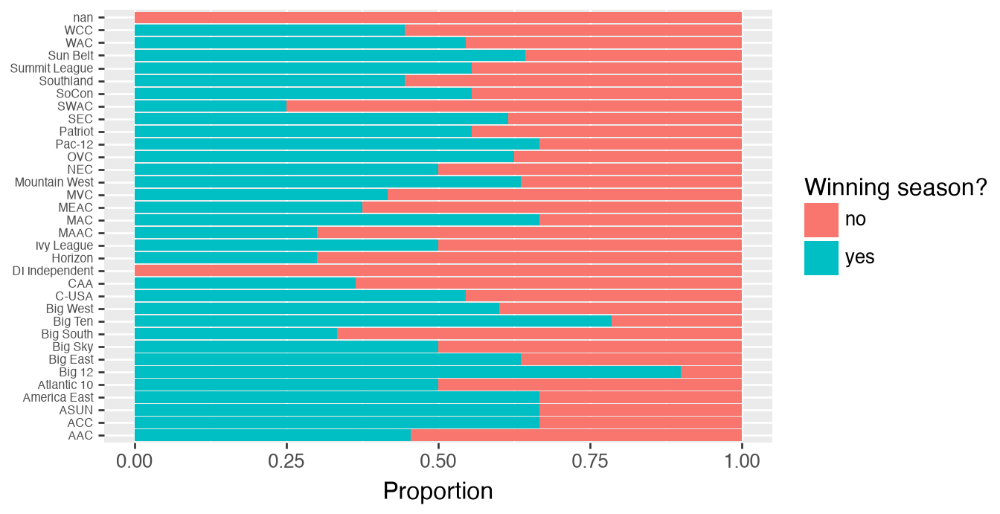
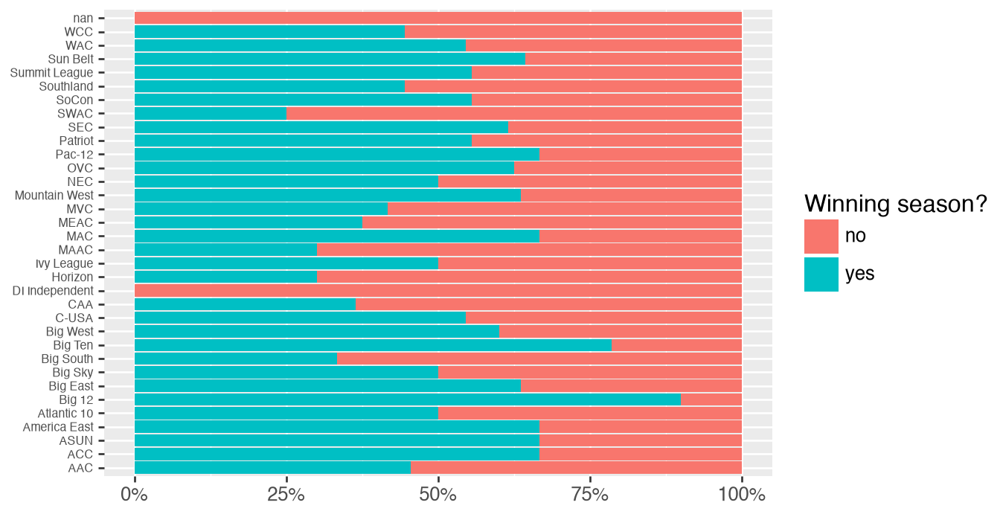
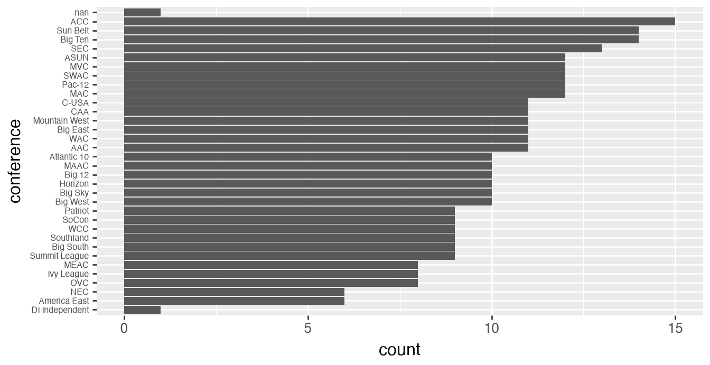
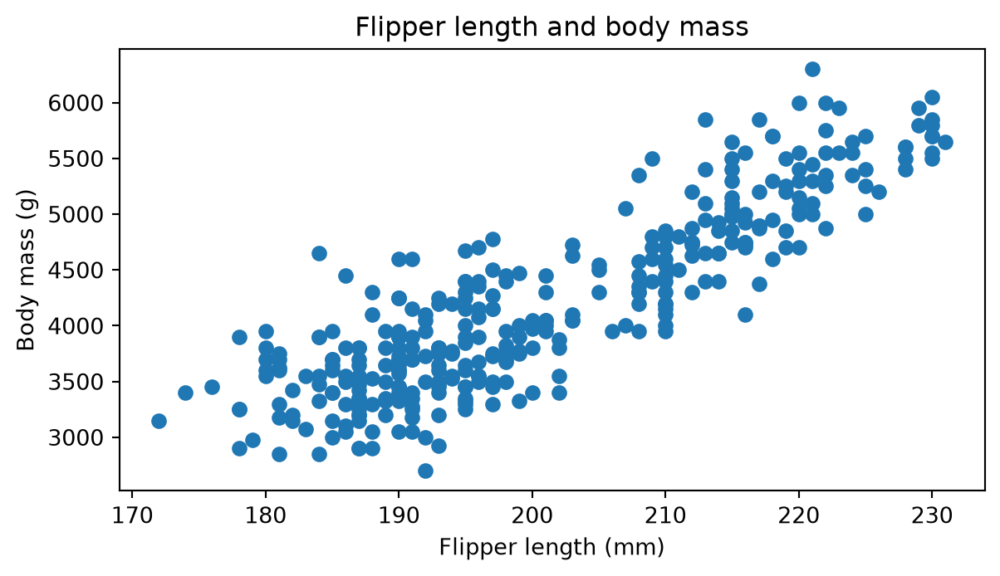
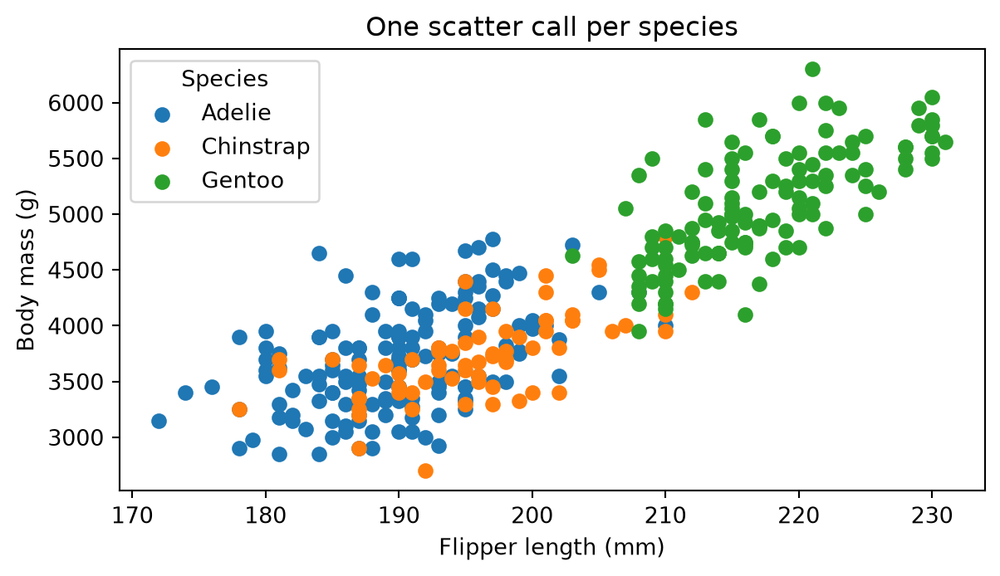
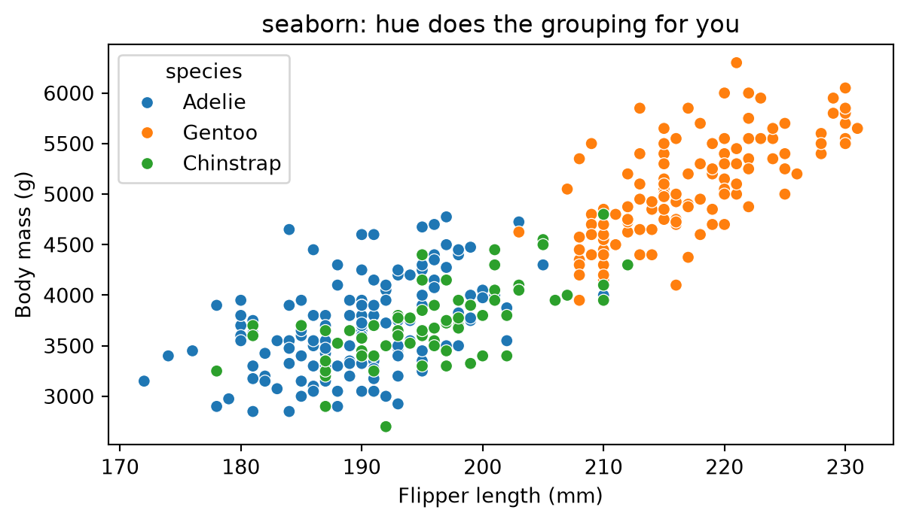
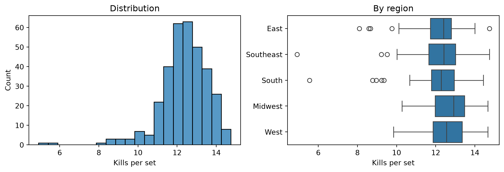
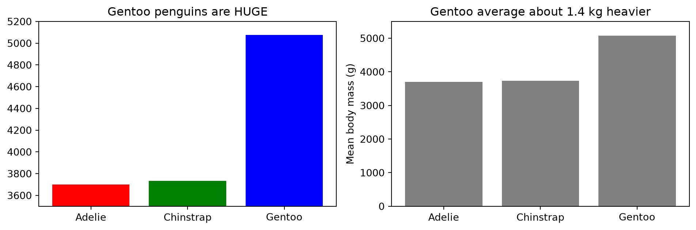

(
penguins
.groupby("species")
.agg(mean_mass=("body_mass_g", "mean"))
)Same grammar, new syntax
ggplot2 layers, in plotnine
aes() and geomsposition="fill"New in Python
pd.Categorical, Python’s factorOpen now:
week_13_practice.qmdSTAT_7500/data folder:
penguins.csv, ucbadmit.csvvolleyball_ncaa_div1_2022_23_clean.csvPackages. If from plotnine import * gives ModuleNotFoundError, run %pip install plotnine seaborn in the Positron Python console, then restart the session (↻).
Zoom poll. How many rows does this return, and where does species end up?
A. 344 rows; species is a column
B. 3 rows; species is a column
C. 3 rows; species is the index (row labels)
D. 1 row
C. One row per group, and the group labels become the index.
species back as a column, use as_index=False or .reset_index()species as a column to map it to colorZoom poll. How many rows does each merge return?
orders has 50 rowscustomers has one row per customer_idcustomer_id found in customers; 5 don’tA. (i) 50 and (ii) 50
B. (i) 50 and (ii) 45
C. (i) 45 and (ii) 45
D. (i) 95 and (ii) 45
B.
NaNleft_join() and inner_join(): predict, then check with len()What will this code provide us with? Say it in plain English.
“A histogram of kills per set, with one panel for each region.”
Chat: What stayed the same? What changed?
"kills_per_set" and "region"facet_wrap("region") replaces facet_wrap(~ region)plotnine is a Python port of ggplot2. Same grammar, same function names:
data + aesthetic mappings + geoms + facets + scales + labels + theme
import * means “bring in every plotnine function by its bare name”ggplot(), not p9.ggplot(): an exception to the Week 10 rulelibrary(ggplot2): a plot uses a dozen functions at onceDemo 1 in Positron
scale_color_cmap_d("viridis") is R’s scale_colour_viridis_d()_d means viridis colors for a discrete variable| ggplot2 | plotnine |
|---|---|
aes(x = bill_depth_mm) |
aes(x="bill_depth_mm"): column names are strings |
+ at the end of a line |
wrap the whole plot in ( ), then start each layer with + |
facet_wrap(~ region) |
facet_wrap("region") |
scale_colour_viridis_d() |
scale_color_cmap_d("viridis") |
theme(legend.position = "bottom") |
theme(legend_position="bottom"): dots → underscores |
ggsave("p.png") |
p.save("p.png") |
The rest is identical: geom names, alpha, binwidth, position = "fill"
A plot is an object: store it with p = (...), add to it later (p + theme_bw()), and save it with p.save(). A plot on the last line of a cell displays; if nothing appears in Positron’s Plots pane, try p.show().
Chat: will this run? Why or why not?
Traceback (most recent call last): File /Library/Frameworks/Python.framework/Versions/3.14/lib/python3.14/site-packages/IPython/core/interactiveshell.py:3748 in run_code exec(code_obj, self.user_global_ns, self.user_ns) Cell In[2], line 1 exec('ggplot(penguins, aes(x="bill_depth_mm", y="bill_length_mm")) +\n geom_point()') File <string>:1 ggplot(penguins, aes(x="bill_depth_mm", y="bill_length_mm")) + ^ SyntaxError: invalid syntax
Python ends a statement at the end of a line unless it’s inside open brackets.
+; Python doesn’tStyle here: ( and ) on their own lines, each layer on its own line starting with +. Comment out one layer (Cmd + /) to debug, like a line of a pipe.
Chat: what happens with each? Does either one fail?
aes()
aes() looks for a column called navy
Rule: inside aes(), the value comes from the data. Outside it, one fixed value.
Demo 2 in Positron

coord_flip() puts the long conference names on the y-axisaes(y = conference) trick
label_percent() turns 0.25 into 25%. It comes from mizani, the package behind plotnine’s scales.
scale_y_continuous(labels = label_percent()), from the scales packageDemo 3 in Positron
Bars come out alphabetical, same as R. Fix the order with a pandas Categorical:

pd.Categorical(..., categories=...) is factor(..., levels = ...)[::-1] (Week 10) flips the order, so the biggest bar ends up on top.pipe(ggplot, ...) hands the DataFrame to ggplot(), like |>.plot(), seaborn, and plotnine all draw with matplotlibOur plan: know plotnine well, and be able to read and tweak matplotlib and seaborn code.
Demo 4 in Positron

fig, ax = ... catches two things that come back at once, one name for each
plt.subplots() returns a Figure and an Axesfor col, values in scores.items() in Week 10: two things, two namesax, one per step: you say how to draw, not what to mapplotnine used aes(color="species"). How does matplotlib do it?

A loop: one ax.scatter() per group, each with a label, then ask for the legend.
groupby hands you (group name, sub-DataFrame) pairs.items() on a dict in Week 10
data=, then column names as strings, like plotninehue= is seaborn’s word for “map to color”ax=ax draws into your panel, so you can keep using matplotlib methods on itDemo 5 in Positron
fig, axes = plt.subplots(1, 2, figsize=(10, 3.5))
sns.histplot(data=volleyball, x="kills_per_set", binwidth=0.5, ax=axes[0])
axes[0].set(title="Distribution", xlabel="Kills per set")
sns.boxplot(data=volleyball, x="kills_per_set", y="region", ax=axes[1])
axes[1].set(title="By region", xlabel="Kills per set", ylabel=None)
fig.tight_layout()
axes holds the panels: axes[0] is the first one (0-based!)Chat: what’s misleading about the plot on the left? List everything you notice.
means = (
penguins
.groupby("species", as_index=False)
.agg(mean_mass=("body_mass_g", "mean"))
)
fig, axes = plt.subplots(1, 2, figsize=(10, 3.4))
axes[0].bar(x = means["species"], height = means["mean_mass"], color=["red", "green", "blue"])
axes[0].set_ylim(3500, 5200)
axes[0].set_title("Gentoo penguins are HUGE")
axes[1].bar(x = means["species"], height = means["mean_mass"], color="gray")
axes[1].set_ylim(0, 5500)
axes[1].set(title="Gentoo average about 1.4 kg heavier", ylabel="Mean body mass (g)")
fig.tight_layout()
What would be the concerns if a plot like that were published?
| ggplot2 | plotnine | matplotlib | seaborn |
|---|---|---|---|
geom_point() |
geom_point() |
ax.scatter(x, y) |
sns.scatterplot(ax=ax) |
aes(color = g) |
aes(color="g") |
a loop over groups | hue="g" |
facet_wrap(~ g) |
facet_wrap("g") |
plt.subplots(1, k) |
— |
labs(title = ...) |
labs(title=...) |
ax.set_title(...) |
ax.set(title=...) |
factor(x, levels = ...) |
pd.Categorical(x, categories=...) |
same as plotnine | same as plotnine |
| patchwork | — | plt.subplots(1, 2) |
ax=axes[0] |
ggsave() |
p.save() |
fig.savefig() |
fig.savefig() |
aes() are strings: aes(x="mass")aes(), like aes(color="navy"), is an error in plotnine
theme() arguments use underscores: legend_position, figure_sizepd.Categorical(..., categories=...)axes[0] is the first panelHappy Thanksgiving! See you in person next week.